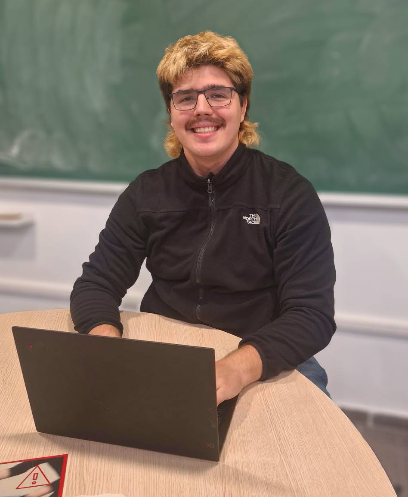

aug 2026-
current
current
AlgStruct practice study AI
ThingLink
Creation of study enviroments to practice problems from Algebraic Structures course, training of small conversational AI to guide students through the problems.

While currently studying my 4th year of Mathematics at UPC, I'm looking forward to starting my career in Quantitative Analysis. I'm eager to apply my knowledge base to real use cases, and to learn new tools and strategies for problem-solving.
I love how mathematics allows us to understand reality, and how it helps us make sense of the challenges we face in an abstract plane, so as to better solve them. I'm particularly interested in the ways the translation from mathematics to reality can be implemented, especially in software.
ThingLink
Creation of study enviroments to practice problems from Algebraic Structures course, training of small conversational AI to guide students through the problems.
Google AIstudio
Creation of a study enviroment that generates new exams from given class notes, practice exercises and previous exams, using Gemini agents.
Universitat Politècnica de Catalunya
Implementation of AI tools in teaching, building study tools using ThingLink and Google AIstudio, particularly in Algebraic Structures course.
eXplorium
Teaching robotics and science to children of all ages, making STEM fun and easy to understand.
Universitat Politècnica de Catalunya
Support in the Differential Calculus course, grading of works and giving extra classes to over 75 students.
self-employed
Help and support to high school and university students, plus preparation of extra study materials and guides adapted to each student's needs.
Universitat Politècnica de Catalunya
Institut Moisès Broggi